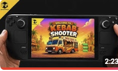

MAREEKPLAYS ORIGINAL • EARLY BUILD
Kebab
Shooter.
A fast, colourful 2D action game about kebabs, delivery vans and surviving the chaos.
Watch gameplay ↗
THE IDEA
Small game.
Big flavour.
Kebab Shooter is a 2D indie game currently in development by MareekPlays. It mixes arcade action, a playful food-truck world and a distinctly homemade sense of humour.
The project is being shaped through early builds and gameplay tests, with Steam Deck playability already part of the journey.
IN DEVELOPMENT
See the world.


ROAD AHEAD
Coming
next.
01More gameplay builds
02Steam Deck refinement
03Future platform plans
Platform availability and release timing will be announced as development progresses.